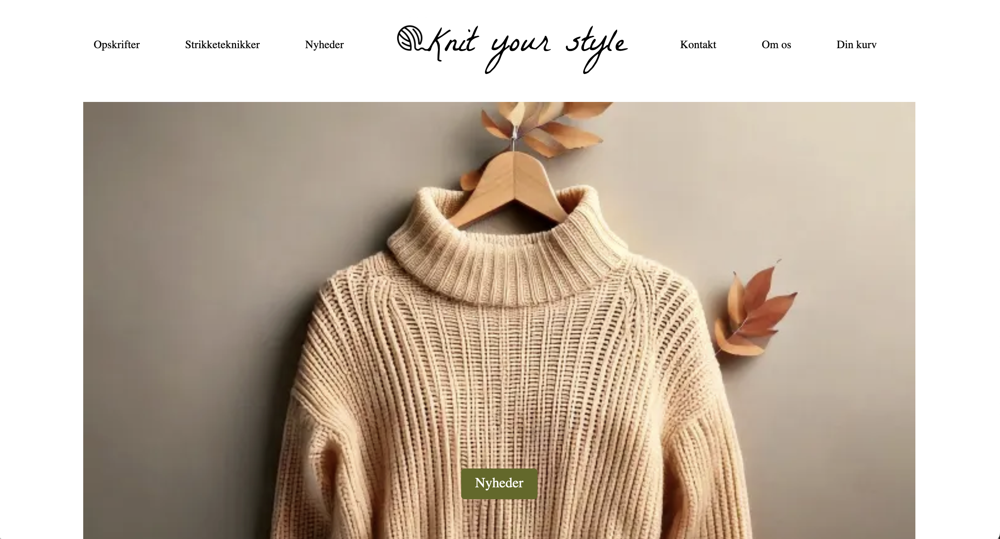

Grundlæggende UX/UI
Tema 03, grundlæggende UX_UI, tog udgangspunkt i et website som viste ens passion. Her lavede jeg en hjemmeside, hvor brugeren kunne købe strikkeopskrifter samt læse mere om nyheder og teknikker indenfor strik. Gennem dette forløb fik jeg en grundlæggende forståelse for samspillet mellem brugere og brugergrænseflader.
Proces, løsning og resultater
Ide / konceptudvikling
I starten af processen blev vi introduceret til research, herunder desk reasearch, userstory, lightning demo samt brugerflows. På baggrund af dette udviklede jeg et moodboard samt et styltile, som jeg testede gennem en likert tetst. Herefter lavede jeg protoyper i Figma over hjemmesiden i mobilsite og website. Gennem hele processen blev sitet testet grundigt ved hjælp af forskellige metoder som heuristisk evaluering og five second test.
Udvikling af design
Herefter lavede jeg protoyper i Figma over hjemmesiden i mobilsite og website. Gennem hele processen blev sitet testet grundigt ved hjælp af forskellige metoder som heuristisk evaluering og five second test.
Implementering
Næste iteration var at gå fra prototype til website. Her startede jeg med mobil sitet, hvor jeg implementerede alle elementerne fra protoypen. Den endelige site blev testet ved hjælp af en lighthousetest, hvor jeg på baggrund af de nye indsigter ændrede mine billederfiler til web-p, for at opnå den højeste score. Forløbet blev afsluttet med en præsentation af vores website, hvor jeg her lavede en præsentation ved hjælp af Figma.
 Check ud